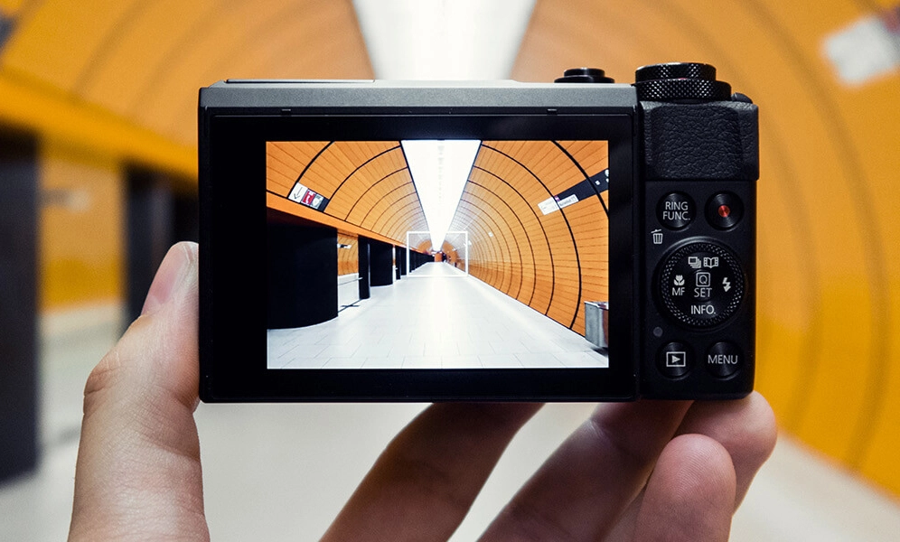
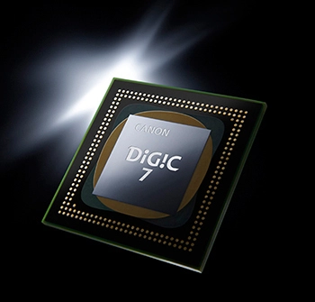
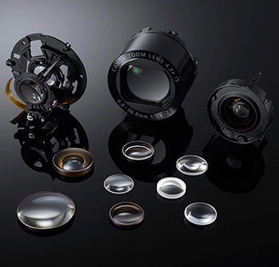
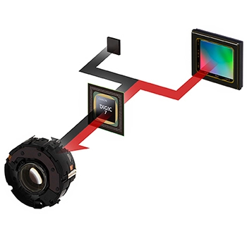
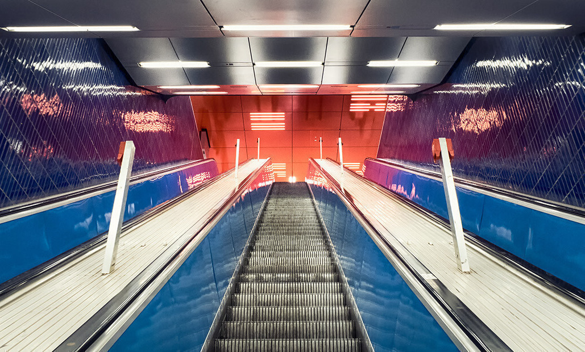

Μαύρη.jpeg)
Canon PowerShot G7
649€
Βασικά χαρακτηριστικά: Αισθητήρας: CMOS Ανάλυση: 20.1MP Οπτικό Ζουμ: 4.2x Wi-Fi
5/5
κωδικός:1111
-

Ποιότητα επαγγελματικού επιπέδου Δημιούργησε με ευκολία ταινίες επαγγελματικής ποιότητας Full HD 60p, χρησιμοποιώντας δημιουργικά τους διάφορους διαθέσιμους ρυθμούς καρέ, όπως 24, 25, 30, 50 και 60fps.
-

Κορυφαίες λήψεις σε όλες τις συνθήκες φωτισμού Απόλαυσε όμορφες, ευκρινείς και καθαρές λήψεις σε όλες τις συνθήκες φωτισμού χάρη στο σύστημα HS, που συνδυάζει έναν αισθητήρα CMOS οπίσθιου φωτισμού τύπου 1,0 και ανάλυσης 20,1 Megapixel με την κορυφαία ισχύ του επεξεργαστή DIGIC 7.
-

Οπτικά ακριβείας για φωτεινές εικόνες Τα εντυπωσιακά οπτικά εξαρτήματα ακριβείας της Canon, ο φακός 24mm f/1.8-2.8 με οπτικό ζουμ 4,2x και η ευαισθησία ISO που φτάνει έως και 12.800 εξασφαλίζουν εξαιρετικές και φωτεινές λήψεις σε κάθε περίσταση.
-

Πανίσχυρος οπτικός Σταθεροποιητής εικόνας Τράβηξε όμορφες, ευκρινείς φωτογραφίες και ταινίες με σταθερή εικόνα χάρη στον έξυπνο οπτικό Σταθεροποιητή εικόνας 4 στοπ με τεχνολογία Dual Sensing IS.
-

Βελτιωμένη επεξεργασία Κατάγραψε εικόνες jpeg υψηλής ποιότητας σε δύσκολες συνθήκες ασθενούς φωτισμού, χάρη στη βελτιωμένη ισχύ του επεξεργαστή DIGIC 7 και αξιοποίησε τις προερχόμενες από τις EOS λειτουργίες διόρθωσης διάθλασης και το Αυτόματης βελτιστοποίησης φωτισμού στην ίδια τη μηχανή.
-
Γενικά
- Ανάλυση Megapixel20,9 MP
- Οπτικό Zoom4,2 x
- Ψηφιακό Zoom4 x
- Σταθεροποίηση Εικόνας Ναι
- Ενσωματωμένο Flash Ναι
- Ενσωματωμένο GPS Όχι
- Υποστήριξη 3D Όχι
- Χρώμα Μαύρο
- Βάρος319 gr
-
Οθόνη & Viewfinder
- Viewfinder (Σκόπευτρο) Όχι
- Μέγεθος Οθόνης 3 "
- Οθόνη Αφής Ναι
- Ανακλινόμενη Οθόνη Ναι
-
Αισθητήρας
- Τύπος Αισθητήρα CMOS
- Μέγεθος Αισθητήρα 1"
- Επιλογές ISO125 - 25600
- Autofocus (AF) Ναι
-
Φακός
- Διάφραγμα (Aperture - f/) 1.8 - 2.8
- Focal Length Range 8.8 - 36.8 mm
- Focal Length Range (35 mm equivalent) 24 - 100 mm
- Focus Range -
-
Εικόνα
- Ανάλυση Εικόνων 5472 x 3648 pixels
- Format Εικόνων JPEG+RAW, JPEG, RAW
-
Video
- Ανάλυση Video 1920 x 1080 pixels
- FPS 60 fps
- Format Video MP4
-
Συνδεσιμότητα & Αποθήκευση
- Τύποι κάρτας μνήμης SDXC, SDHC
- Συνδέσεις HDMI, NFC, USB, WiFi
-
Διαστάσεις
- Πλάτος 105,5 mm
- Ύψος 60,9 mm
- Βάθος 42 mm
-
Μπαταρία
- Διάρκεια Μπαταρίας (Φωτογραφίες) 240